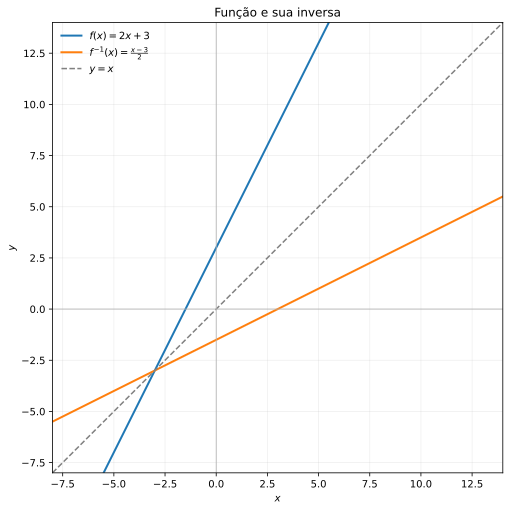
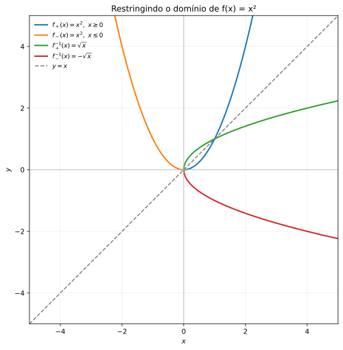
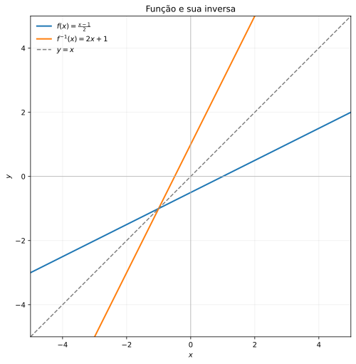
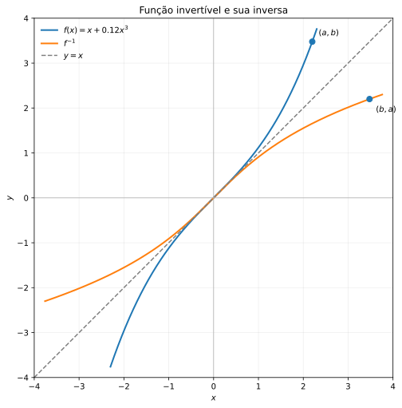
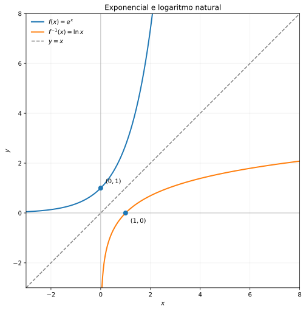
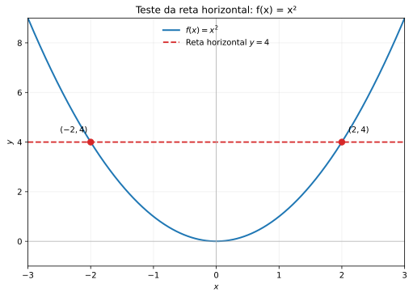
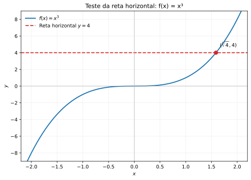
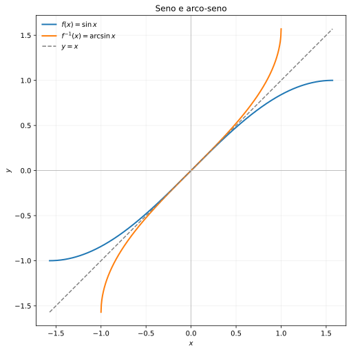
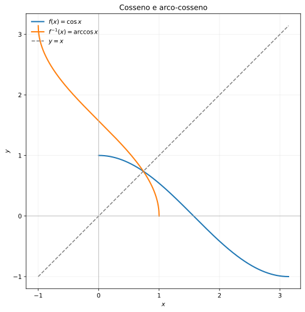
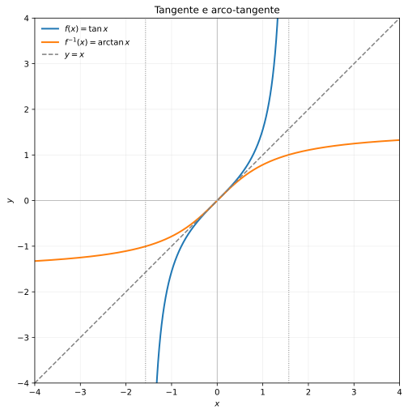

flowchart LR
X["Entrada: x"] --> F["Aplicar f"]
F --> Y["Saída: f(x)"]
Y --> FI["Aplicar f⁻¹"]
FI --> X2["Retorno: x"]
📘 Módulo 1.14: Função Inversa
cálculo
matemática
curso
funções
função inversa
Estudo de funções inversas, bijetividade, domínio, imagem, composição com a inversa, gráficos simétricos e exemplos fundamentais.
🏠 ← Sumário do Curso · ← Cursos de Matemática · ← Seção de Matemática
🎯 Aula anterior: 👉 1.13 Composição de Funções
🎯 Próxima aula: 👉 1.15 Modelos com Funções Elementares
Dica❓ Pergunta Disparadora
Em que condições podemos desfazer uma função e recuperar uma única entrada a partir de sua saída?
Toda função possui inversa?
Nota📌 Objetivos de Aprendizagem
Ao final desta aula, você deverá ser capaz de:
- Compreender o significado de função inversa e sua relação com a composição de funções.
- Distinguir funções injetivas, sobrejetivas e bijetivas.
- Identificar as condições necessárias e suficientes para a existência de uma inversa.
- Determinar funções inversas algebricamente e verificar as identidades de composição.
- Interpretar restrições adequadas de domínio e contradomínio para obter funções invertíveis.
- Identificar a reflexão dos gráficos de \(f\) e \(f^{-1}\) na reta \(y=x\).
- Reconhecer pares importantes de funções inversas, como exponencial e logaritmo.
1 📘 Função Inversa
Na aula anterior, estudamos a composição de funções. Agora vamos utilizar essa ideia para compreender um conceito fundamental: a função inversa.
Intuitivamente, uma função inversa desfaz o que a função original fez.
Por exemplo, considere:
\[ f(x)=x+3. \]
Essa função soma \(3\) à entrada.
A função que desfaz essa operação é:
\[ f^{-1}(x)=x-3. \]
De fato, se começamos com \(x\), aplicamos \(f\) e depois aplicamos \(f^{-1}\), voltamos ao valor inicial:
\[ \begin{aligned} f^{-1}(f(x)) &=f^{-1}(x+3)\\ &=(x+3)-3\\ &=x. \end{aligned} \]
A função inversa é, portanto, uma função de retorno.
Entretanto, existe uma condição importante: para que a inversa seja uma função, cada saída da função original deve corresponder a uma única entrada.
É por isso que nem toda função possui inversa.
1.1 💡 A ideia de desfazer uma operação
Considere a função:
\[ f(x)=2x. \]
Ela dobra o valor de entrada.
Para desfazer essa operação, dividimos por \(2\):
\[ f^{-1}(x)=\frac{x}{2}. \]
Assim:
\[ \begin{aligned} f^{-1}(f(x)) &=f^{-1}(2x)\\ &=\frac{2x}{2}\\ &=x. \end{aligned} \]
Também temos:
\[ \begin{aligned} f(f^{-1}(x)) &=f\left(\frac{x}{2}\right)\\ &=2\cdot\frac{x}{2}\\ &=x. \end{aligned} \]
As duas composições recuperam o valor inicial.
Ilustração — Ida e volta entre uma função e sua inversa
Primeiro, aplicamos \(f\) e, em seguida, sua inversa \(f^{-1}\).
Agora, fazemos o percurso contrário: aplicamos \(f^{-1}\) e depois \(f\).
flowchart LR
Y2["Entrada: y"] --> FI2["Aplicar f⁻¹"]
FI2 --> X3["Saída: f⁻¹(y)"]
X3 --> F2["Aplicar f"]
F2 --> Y3["Retorno: y"]
Quando as duas composições devolvem a entrada original, uma função é inversa da outra.
1.2 📐 Definição de função inversa
Seja:
\[ f:A\to B \]
uma função.
Uma função:
\[ f^{-1}:B\to A \]
é chamada de função inversa de \(f\) quando satisfaz as duas condições:
\[ f^{-1}(f(x))=x, \qquad x\in A, \]
e
\[ f(f^{-1}(y))=y, \qquad y\in B. \]
Em termos de composição:
\[ f^{-1}\circ f=\operatorname{id}_A \]
e
\[ f\circ f^{-1}=\operatorname{id}_B, \]
onde \(\operatorname{id}\) representa a função identidade.
Essas duas relações expressam a ideia de que uma função desfaz a ação da outra, tanto no sentido de ida quanto no sentido de volta.
NotaIdeia central
A inversa de uma função é a função que desfaz a ação da função original.
Para uma função \(f:A\to B\), sua inversa, quando existe, associa elementos de \(B\) a elementos de \(A\).
1.3 🆔 A função identidade
A função identidade em um conjunto \(A\) é definida por:
\[ \operatorname{id}_A(x)=x. \]
Ela não altera a entrada.
Por exemplo, em \(\mathbb{R}\):
\[ \operatorname{id}_{\mathbb{R}}(x)=x. \]
Dizer que:
\[ f^{-1}\circ f=\operatorname{id}_A \]
significa que aplicar \(f\) e depois aplicar \(f^{-1}\) devolve o ponto inicial.
Dizer que:
\[ f\circ f^{-1}=\operatorname{id}_B \]
significa que aplicar \(f^{-1}\) e depois aplicar \(f\) também devolve o ponto inicial.
A função identidade é, portanto, o elemento neutro da composição de funções compatíveis.
1.4 ⚠️ Nem toda função tem inversa
Nem toda função possui inversa.
Para uma função \(f:A\to B\) ter uma inversa definida em todo o contradomínio \(B\), ela precisa satisfazer duas condições:
- Entradas diferentes devem produzir saídas diferentes.
- Todos os elementos do contradomínio devem ser atingidos.
Em outras palavras, a função precisa ser bijetiva.
Uma função bijetiva é, ao mesmo tempo:
- injetiva;
- sobrejetiva.
Esses conceitos são fundamentais para entender quando a inversa existe.
1.5 🧩 Função injetiva
Uma função é injetiva quando entradas diferentes produzem saídas diferentes.
Formalmente, uma função \(f:A\to B\) é injetiva quando:
\[ x_1\neq x_2 \quad\Rightarrow\quad f(x_1)\neq f(x_2). \]
Equivalentemente:
\[ f(x_1)=f(x_2) \quad\Rightarrow\quad x_1=x_2. \]
Isso significa que nenhum elemento da imagem pode ser obtido a partir de duas entradas diferentes.
Exemplo:
Considere:
\[ f(x)=2x+1. \]
Se:
\[ f(x_1)=f(x_2), \]
então:
\[ 2x_1+1=2x_2+1. \]
Subtraindo \(1\) dos dois lados:
\[ 2x_1=2x_2. \]
Dividindo por \(2\):
\[ x_1=x_2. \]
Portanto, \(f(x)=2x+1\) é injetiva em \(\mathbb{R}\).
Exemplo de função que não é injetiva:
Considere:
\[ f(x)=x^2. \]
Temos:
\[ f(2)=4 \]
e
\[ f(-2)=4. \]
Duas entradas diferentes produzem a mesma saída.
Ilustração — Duas entradas chegam à mesma saída
flowchart LR
subgraph A["Entradas"]
direction TB
X1["−2"]
X2["2"]
end
subgraph B["Saída"]
direction TB
Y["4"]
end
X1 --> Y
X2 --> Y
Assim, \(f(x)=x^2\) não é injetiva em todo \(\mathbb{R}\).
1.6 🧩 Função sobrejetiva
Uma função
\[ f:A\to B \]
é sobrejetiva quando todo elemento do contradomínio \(B\) é imagem de pelo menos um elemento do domínio \(A\).
Formalmente, para todo \(y\in B\), existe pelo menos um \(x\in A\) tal que:
\[ f(x)=y. \]
Em símbolos:
\[ \boxed{ \forall y\in B,\ \exists x\in A:\ f(x)=y } \]
Isso significa que nenhum elemento do contradomínio fica sem ser atingido. Equivalentemente, a imagem da função coincide com o contradomínio:
\[ \boxed{\operatorname{Im}(f)=B} \]
1.6.1 Ilustração — Todos os elementos do contradomínio são atingidos
flowchart LR
subgraph A["Domínio A"]
direction TB
a["a"]
b["b"]
c["c"]
d["d"]
end
subgraph B["Contradomínio B"]
direction TB
y1["1"]
y2["2"]
y3["3"]
end
a -->|f| y1
b -->|f| y2
c -->|f| y3
d -->|f| y2
Observe que todos os elementos do contradomínio \(B=\{1,2,3\}\) recebem pelo menos uma seta. Portanto, a função é sobrejetiva.
Note também que os elementos \(b\) e \(d\) possuem a mesma imagem:
\[ f(b)=f(d)=2. \]
Isso mostra que uma função pode ser sobrejetiva sem ser injetiva: diferentes elementos do domínio podem ser enviados ao mesmo elemento do contradomínio.
1.6.2 Exemplo — Uma função sobrejetiva de \(\mathbb{R}\) em \(\mathbb{R}\)
Considere a função:
\[ f:\mathbb{R}\to\mathbb{R} \]
definida por:
\[ f(x)=2x+1. \]
Para verificar se \(f\) é sobrejetiva, devemos mostrar que todo número real \(y\) pode ser escrito como \(f(x)\) para algum \(x\in\mathbb{R}\).
Seja, então, \(y\in\mathbb{R}\) arbitrário. Procuramos um \(x\in\mathbb{R}\) que satisfaça:
\[ f(x)=y. \]
Substituindo a expressão da função:
\[ 2x+1=y. \]
Isolando \(x\), obtemos:
\[ 2x=y-1, \]
e, portanto:
\[ \boxed{x=\frac{y-1}{2}}. \]
Como \(y\in\mathbb{R}\), temos:
\[ \frac{y-1}{2}\in\mathbb{R}. \]
Assim, para qualquer número real \(y\), encontramos um número real \(x\) tal que:
\[ \begin{aligned} f\left(\frac{y-1}{2}\right) &=2\left(\frac{y-1}{2}\right)+1\\ &=y-1+1\\ &=y. \end{aligned} \]
Logo, todo elemento do contradomínio é atingido.
Concluímos que:
\[ \boxed{f\text{ é sobrejetiva}.} \]
Ideia fundamental: para demonstrar que uma função é sobrejetiva, partimos de um elemento arbitrário do contradomínio e mostramos que existe um elemento do domínio cuja imagem é exatamente esse elemento.
1.7 🧩 Função bijetiva
Uma função é bijetiva quando é simultaneamente injetiva e sobrejetiva.
Isso significa que:
- entradas diferentes produzem saídas diferentes;
- todos os elementos do contradomínio são atingidos.
Cada elemento do contradomínio corresponde, portanto, a exatamente uma entrada do domínio.
Ilustração — Correspondência bijetiva
flowchart LR
subgraph A["Domínio A"]
direction TB
A1["a₁"]
A2["a₂"]
A3["a₃"]
end
subgraph B["Contradomínio B"]
direction TB
B1["b₁"]
B2["b₂"]
B3["b₃"]
end
A1 --> B2
A2 --> B3
A3 --> B1
Nesse exemplo, cada elemento do domínio está associado a um único elemento do contradomínio, e cada elemento do contradomínio é atingido exatamente uma vez.
DicaCritério prático
Uma função \(f:A\to B\) possui inversa \(f^{-1}:B\to A\) quando cada valor de saída corresponde a uma única entrada e todos os valores do contradomínio são atingidos.
1.8 ✅ Exemplo de função com inversa
Considere:
\[ f:\mathbb{R}\to\mathbb{R} \]
dada por:
\[ f(x)=2x+3. \]
Para encontrar a inversa, escrevemos:
\[ y=2x+3. \]
Agora resolvemos essa equação para \(x\):
\[ y-3=2x, \]
logo:
\[ x=\frac{y-3}{2}. \]
Trocando \(y\) por \(x\), obtemos:
\[ \boxed{f^{-1}(x)=\frac{x-3}{2}}. \]
Vamos verificar a primeira composição:
\[ \begin{aligned} f^{-1}(f(x)) &=f^{-1}(2x+3)\\ &=\frac{(2x+3)-3}{2}\\ &=\frac{2x}{2}\\ &=x. \end{aligned} \]
Agora verificamos a segunda:
\[ \begin{aligned} f(f^{-1}(x)) &=f\left(\frac{x-3}{2}\right)\\ &=2\cdot\frac{x-3}{2}+3\\ &=x-3+3\\ &=x. \end{aligned} \]
As duas composições resultam na identidade. Portanto, as funções são inversas.

NotaClique para ver o código
import numpy as np
import matplotlib.pyplot as plt
from pathlib import Path
x = np.linspace(-8, 14, 600)
fig, ax = plt.subplots(figsize=(7.2, 7.2))
ax.plot(x, 2*x + 3,
lw=2, label=r'$f(x)=2x+3$')
ax.plot(x, (x - 3)/2,
lw=2, label=r'$f^{-1}(x)=\frac{x-3}{2}$')
ax.plot(x, x,
linestyle='--', color='gray',
lw=1.5, label=r'$y=x$')
ax.axhline(0, color='0.7', lw=0.8)
ax.axvline(0, color='0.7', lw=0.8)
ax.set(
xlim=(-8, 14),
ylim=(-8, 14),
xlabel='$x$',
ylabel='$y$',
title='Função e sua inversa'
)
ax.set_aspect('equal', adjustable='box')
ax.legend(loc='upper left', frameon=False)
ax.grid(alpha=0.2)
fig.tight_layout()
Path('images').mkdir(exist_ok=True)
fig.savefig('images/1.14-funcao-inversa.svg',
bbox_inches='tight')
plt.close(fig)1.9 ❌ Exemplo de função sem inversa em todo \(\mathbb{R}\)
Considere:
\[ f:\mathbb{R}\to\mathbb{R} \]
dada por:
\[ f(x)=x^2. \]
Essa função não é injetiva em \(\mathbb{R}\), pois:
\[ f(2)=4 \]
e
\[ f(-2)=4. \]
Duas entradas diferentes produzem a mesma saída.
Além disso, a função não é sobrejetiva em \(\mathbb{R}\), pois não assume valores negativos.
Portanto, \(f(x)=x^2\) não possui inversa como função de \(\mathbb{R}\) em \(\mathbb{R}\).
1.10 🧭 Restringindo o domínio
Embora:
\[ f(x)=x^2 \]
não tenha inversa em todo \(\mathbb{R}\), podemos restringir seu domínio.
Considere:
\[ f:[0,+\infty)\to[0,+\infty) \]
dada por:
\[ f(x)=x^2. \]
Agora a função é injetiva e sobrejetiva.
A inversa é:
\[ f^{-1}(x)=\sqrt{x}. \]
De fato:
\[ \sqrt{x^2}=x \]
para:
\[ x\geq 0. \]
Ilustração — Restrição do domínio e recuperação da entrada
flowchart TB
A["Domínio: x ≥ 0"] --> F["Aplicar f(x) = x²"]
F --> B["Imagem: y ≥ 0"]
B --> G["Aplicar f⁻¹(y) = √y"]
G --> C["Recuperar x ≥ 0"]
Esse exemplo mostra que a existência da inversa depende fortemente do domínio e do contradomínio escolhidos.
Também poderíamos restringir o domínio a:
\[ (-\infty,0]. \]
Nesse caso, a função também seria bijetiva sobre \([0,+\infty)\), e sua inversa seria:
\[ f^{-1}(x)=-\sqrt{x}. \]
NotaAtenção ao domínio
A função \(x^2\) possui duas restrições naturais que permitem construir inversas diferentes:
- Se o domínio for \([0,+\infty)\), a inversa será \(\sqrt{x}\).
- Se o domínio for \((-\infty,0]\), a inversa será \(-\sqrt{x}\).
A escolha do domínio determina qual ramo da função será invertido.

NotaClique para ver o código
import numpy as np
import matplotlib.pyplot as plt
from pathlib import Path
# Domínio da restrição x >= 0
x_pos = np.linspace(0, np.sqrt(5), 400)
y_pos = x_pos**2
# Domínio da restrição x <= 0
x_neg = np.linspace(-np.sqrt(5), 0, 400)
y_neg = x_neg**2
# Domínio das funções inversas: x >= 0
u = np.linspace(0, 5, 400)
y_inv_pos = np.sqrt(u)
y_inv_neg = -np.sqrt(u)
fig, ax = plt.subplots(figsize=(7.2, 7.2))
# Funções com domínio restrito
ax.plot(x_pos, y_pos, lw=2,
label=r'$f_+(x)=x^2,\ x\geq 0$')
ax.plot(x_neg, y_neg, lw=2,
label=r'$f_-(x)=x^2,\ x\leq 0$')
# Funções inversas
ax.plot(u, y_inv_pos, lw=2,
label=r'$f_+^{-1}(x)=\sqrt{x}$')
ax.plot(u, y_inv_neg, lw=2,
label=r'$f_-^{-1}(x)=-\sqrt{x}$')
# Reta de simetria
ax.plot([-5, 5], [-5, 5],
linestyle='--', color='gray', lw=1.5,
label=r'$y=x$')
# Eixos cartesianos
ax.axhline(0, color='0.7', lw=0.8)
ax.axvline(0, color='0.7', lw=0.8)
ax.set(
xlim=(-5, 5),
ylim=(-5, 5),
xlabel='$x$',
ylabel='$y$',
title='Restringindo o domínio de f(x) = x²'
)
ax.set_aspect('equal', adjustable='box')
ax.legend(loc='upper left', frameon=False, fontsize=9)
ax.grid(alpha=0.2)
fig.tight_layout()
Path('images').mkdir(exist_ok=True)
fig.savefig('images/1.14-restricoes-dominio.svg',
bbox_inches='tight')
plt.close(fig)1.11 🪞 Como encontrar a inversa
Para encontrar a inversa de uma função dada por uma fórmula, podemos seguir estes passos:
- Escreva \(y=f(x)\).
- Resolva a equação para \(x\) em função de \(y\).
- Troque o nome da variável \(y\) por \(x\), obtendo a expressão da inversa.
- Identifique o domínio e a imagem da inversa.
- Verifique as duas composições, quando necessário.
Exemplo:
Considere:
\[ f(x)=\frac{x-1}{2}. \]
Escrevemos:
\[ y=\frac{x-1}{2}. \]
Multiplicando por \(2\):
\[ 2y=x-1. \]
Logo:
\[ x=2y+1. \]
Portanto:
\[ \boxed{f^{-1}(x)=2x+1}. \]
Observe que o procedimento algébrico precisa ser acompanhado da verificação dos domínios. A expressão obtida deve representar uma função com o domínio e o contradomínio adequados.

NotaClique para ver o código
import numpy as np
import matplotlib.pyplot as plt
from pathlib import Path
x = np.linspace(-5, 5, 600)
# Função original
y_f = (x - 1) / 2
# Função inversa
y_inv = 2*x + 1
# Reta de simetria
y_identidade = x
fig, ax = plt.subplots(figsize=(7.2, 7.2))
ax.plot(x, y_f, lw=2,
label=r'$f(x)=\frac{x-1}{2}$')
ax.plot(x, y_inv, lw=2,
label=r'$f^{-1}(x)=2x+1$')
ax.plot(x, y_identidade,
linestyle='--', color='gray', lw=1.5,
label=r'$y=x$')
# Eixos cartesianos
ax.axhline(0, color='0.7', lw=0.8)
ax.axvline(0, color='0.7', lw=0.8)
ax.set(
xlim=(-5, 5),
ylim=(-5, 5),
xlabel='$x$',
ylabel='$y$',
title='Função e sua inversa'
)
ax.set_aspect('equal', adjustable='box')
ax.legend(loc='upper left', frameon=False)
ax.grid(alpha=0.2)
fig.tight_layout()
Path('images').mkdir(exist_ok=True)
fig.savefig('images/1.14-como-encontrar-inversa.svg',
bbox_inches='tight')
plt.close(fig)1.12 📊 Gráfico da função inversa
O gráfico de uma função inversa possui uma relação geométrica especial com o gráfico da função original.
Se o ponto:
\[ (a,b) \]
pertence ao gráfico de \(f\), então:
\[ f(a)=b. \]
Como a inversa desfaz a ação de \(f\), temos:
\[ f^{-1}(b)=a. \]
Portanto, o ponto:
\[ (b,a) \]
pertence ao gráfico de \(f^{-1}\).
Isso significa que os gráficos de \(f\) e \(f^{-1}\) são simétricos em relação à reta:
\[ y=x. \]
Ilustração — Troca das coordenadas
flowchart TB
A["Ponto (a, b) no gráfico de f"] --> B["Trocar as coordenadas"]
B --> C["Ponto (b, a) no gráfico de f⁻¹"]
C --> D["Simetria em relação à reta y = x"]
A simetria ocorre porque a inversa troca os papéis da entrada e da saída.
Por exemplo, as funções:
\[ f(x)=e^x \]
e
\[ f^{-1}(x)=\ln x \]
têm gráficos simétricos em relação à reta \(y=x\).


NotaClique para ver o código
import numpy as np
import matplotlib.pyplot as plt
from pathlib import Path
Path('images').mkdir(exist_ok=True)
# =========================================================
# 1. Gráfico esquemático de uma função invertível
# =========================================================
# Função estritamente crescente usada como exemplo visual
x = np.linspace(-2.3, 2.3, 600)
y = x + 0.12*x**3
# Ponto (a,b) e seu correspondente (b,a)
a = 2.2
b = a + 0.12*a**3
fig, ax = plt.subplots(figsize=(7.2, 7.2))
# Função original
ax.plot(x, y, lw=2,
label=r'$f(x)=x+0.12x^3$')
# Inversa: troca das coordenadas dos pontos do gráfico
ax.plot(y, x, lw=2,
label=r'$f^{-1}$')
# Bissetriz dos quadrantes ímpares
ax.plot([-4, 4], [-4, 4],
linestyle='--', color='gray', lw=1.5,
label=r'$y=x$')
# Pontos simétricos
ax.scatter([a, b], [b, a], s=50, zorder=4)
ax.annotate(r'$(a,b)$', (a, b),
xytext=(8, 8), textcoords='offset points')
ax.annotate(r'$(b,a)$', (b, a),
xytext=(8, -16), textcoords='offset points')
ax.axhline(0, color='0.7', lw=0.8)
ax.axvline(0, color='0.7', lw=0.8)
ax.set(
xlim=(-4, 4),
ylim=(-4, 4),
xlabel='$x$',
ylabel='$y$',
title='Função invertível e sua inversa'
)
ax.set_aspect('equal', adjustable='box')
ax.legend(loc='upper left', frameon=False)
ax.grid(alpha=0.2)
fig.tight_layout()
fig.savefig('images/1.14-grafico-generico-inversa.svg',
bbox_inches='tight')
plt.close(fig)
# =========================================================
# 2. Função exponencial e logaritmo natural
# =========================================================
# f(x) = e^x
x_exp = np.linspace(-3, np.log(8), 600)
y_exp = np.exp(x_exp)
# f^(-1)(x) = ln(x), com domínio x > 0
x_log = np.linspace(np.exp(-3), 8, 600)
y_log = np.log(x_log)
fig, ax = plt.subplots(figsize=(7.2, 7.2))
ax.plot(x_exp, y_exp, lw=2,
label=r'$f(x)=e^x$')
ax.plot(x_log, y_log, lw=2,
label=r'$f^{-1}(x)=\ln x$')
# Bissetriz dos quadrantes ímpares
ax.plot([-3, 8], [-3, 8],
linestyle='--', color='gray', lw=1.5,
label=r'$y=x$')
# Pontos correspondentes: (0,1) e (1,0)
ax.scatter([0, 1], [1, 0], s=50, zorder=4)
ax.annotate(r'$(0,1)$', (0, 1),
xytext=(8, 8), textcoords='offset points')
ax.annotate(r'$(1,0)$', (1, 0),
xytext=(8, -16), textcoords='offset points')
ax.axhline(0, color='0.7', lw=0.8)
ax.axvline(0, color='0.7', lw=0.8)
ax.set(
xlim=(-3, 8),
ylim=(-3, 8),
xlabel='$x$',
ylabel='$y$',
title='Exponencial e logaritmo natural'
)
ax.set_aspect('equal', adjustable='box')
ax.legend(loc='upper left', frameon=False)
ax.grid(alpha=0.2)
fig.tight_layout()
fig.savefig('images/1.14-exponencial-logaritmo.svg',
bbox_inches='tight')
plt.close(fig)1.13 🔎 Teste da reta horizontal
Para saber se uma função é injetiva, podemos utilizar o teste da reta horizontal.
DicaTeste da reta horizontal
Uma função é injetiva se toda reta horizontal intercepta seu gráfico em, no máximo, um ponto.
Se alguma reta horizontal corta o gráfico em dois ou mais pontos, existem dois valores diferentes de \(x\) produzindo a mesma saída. Nesse caso, a função não é injetiva e não possui inversa como função no domínio considerado.
Ilustração — Como interpretar o teste
flowchart TB
A["Escolha uma reta horizontal"] --> B["Observe as interseções com o gráfico"]
B --> C{"Quantos pontos de interseção?"}
C -->|"No máximo um"| D["A condição de injetividade é satisfeita"]
C -->|"Dois ou mais"| E["A função não é injetiva"]
Por exemplo, o gráfico de:
\[ f(x)=x^2 \]
em \(\mathbb{R}\) falha no teste da reta horizontal.
Já o gráfico de:
\[ f(x)=x^3 \]
passa no teste e possui inversa em \(\mathbb{R}\), dada por:
\[ f^{-1}(x)=\sqrt[3]{x}. \]


NotaClique para ver o código
import numpy as np
import matplotlib.pyplot as plt
from pathlib import Path
Path('images').mkdir(exist_ok=True)
# =========================================================
# 1. Função f(x) = x²: não é injetiva em R
# =========================================================
x = np.linspace(-3, 3, 600)
y = x**2
# Reta horizontal y = 4
y_horizontal = 4
# Pontos de interseção: (-2, 4) e (2, 4)
x_intersecoes = [-2, 2]
y_intersecoes = [4, 4]
fig, ax = plt.subplots(figsize=(7.2, 5.2))
ax.plot(x, y, lw=2,
label=r'$f(x)=x^2$')
ax.axhline(y_horizontal, color='tab:red',
linestyle='--', lw=1.8,
label=r'Reta horizontal $y=4$')
ax.scatter(x_intersecoes, y_intersecoes,
color='tab:red', s=55, zorder=4)
ax.annotate(r'$(-2,4)$', (-2, 4),
xytext=(-38, 12),
textcoords='offset points')
ax.annotate(r'$(2,4)$', (2, 4),
xytext=(8, 12),
textcoords='offset points')
ax.axhline(0, color='0.7', lw=0.8)
ax.axvline(0, color='0.7', lw=0.8)
ax.set(
xlim=(-3, 3),
ylim=(-1, 9),
xlabel='$x$',
ylabel='$y$',
title='Teste da reta horizontal: f(x) = x²'
)
ax.legend(loc='upper center', frameon=False)
ax.grid(alpha=0.2)
fig.tight_layout()
fig.savefig('images/1.14-teste-reta-horizontal-x2.svg',
bbox_inches='tight')
plt.close(fig)
# =========================================================
# 2. Função f(x) = x³: é injetiva em R
# =========================================================
x = np.linspace(-2.2, 2.2, 600)
y = x**3
# Reta horizontal y = 4
y_horizontal = 4
# Única interseção: x = raiz cúbica de 4
x_intersecao = np.cbrt(4)
fig, ax = plt.subplots(figsize=(7.2, 5.2))
ax.plot(x, y, lw=2,
label=r'$f(x)=x^3$')
ax.axhline(y_horizontal, color='tab:red',
linestyle='--', lw=1.8,
label=r'Reta horizontal $y=4$')
ax.scatter([x_intersecao], [4],
color='tab:red', s=55, zorder=4)
ax.annotate(r'$(\sqrt[3]{4},4)$',
(x_intersecao, 4),
xytext=(8, 12),
textcoords='offset points')
ax.axhline(0, color='0.7', lw=0.8)
ax.axvline(0, color='0.7', lw=0.8)
ax.set(
xlim=(-2.2, 2.2),
ylim=(-9, 9),
xlabel='$x$',
ylabel='$y$',
title='Teste da reta horizontal: f(x) = x³'
)
ax.legend(loc='upper left', frameon=False)
ax.grid(alpha=0.2)
fig.tight_layout()
fig.savefig('images/1.14-teste-reta-horizontal-x3.svg',
bbox_inches='tight')
plt.close(fig)Uma observação importante: o teste da reta horizontal verifica a injetividade, mas não garante, sozinho, a sobrejetividade em relação a um contradomínio previamente escolhido.
1.14 🚀 Exponencial e logaritmo
Um dos pares mais importantes de funções inversas é:
\[ f(x)=e^x \]
e
\[ f^{-1}(x)=\ln x. \]
Temos:
\[ \ln(e^x)=x \]
para todo:
\[ x\in\mathbb{R}, \]
e:
\[ e^{\ln x}=x \]
para todo:
\[ x>0. \]
Observe a troca entre domínio e imagem:
- \(e^x\) tem domínio \(\mathbb{R}\) e imagem \((0,+\infty)\).
- \(\ln x\) tem domínio \((0,+\infty)\) e imagem \(\mathbb{R}\).
Ilustração — Exponencial e logaritmo como operações inversas
Primeiro, aplicamos a exponencial:
flowchart LR
A["x ∈ ℝ"] --> B["Aplicar eˣ"]
B --> C["y > 0"]
Em seguida, aplicamos o logaritmo para recuperar a entrada:
flowchart LR
A["y > 0"] --> B["Aplicar ln"]
B --> C["Recuperar x ∈ ℝ"]
A relação entre exponencial e logaritmo será especialmente importante no estudo de limites, derivadas e integrais.
1.15 🪞 Seno, cosseno e funções inversas
As funções trigonométricas também podem ter inversas, mas precisam de restrições adequadas de domínio.
Por exemplo, a função:
\[ f(x)=\sin x \]
não é injetiva em todo \(\mathbb{R}\), pois é periódica.
Entretanto, se restringirmos seu domínio a:
\[ \left[-\frac{\pi}{2},\frac{\pi}{2}\right], \]
o seno se torna injetivo e admite uma inversa chamada arco-seno:
\[ f^{-1}(x)=\arcsin x. \]
Nesse caso, a função inversa é:
\[ \arcsin:[-1,1]\to \left[-\frac{\pi}{2},\frac{\pi}{2}\right]. \]
O mesmo raciocínio vale para outras funções trigonométricas.
| Função original | Domínio escolhido | Função inversa |
|---|---|---|
| \(\sin x\) | \(\left[-\frac{\pi}{2},\frac{\pi}{2}\right]\) | \(\arcsin x\) |
| \(\cos x\) | \([0,\pi]\) | \(\arccos x\) |
| \(\tan x\) | \(\left(-\frac{\pi}{2},\frac{\pi}{2}\right)\) | \(\arctan x\) |



NotaClique para ver o código
import numpy as np
import matplotlib.pyplot as plt
from pathlib import Path
Path('images').mkdir(exist_ok=True)
# =========================================================
# 1. Seno e arco-seno
# =========================================================
# Seno: domínio restrito [-pi/2, pi/2]
x_sin = np.linspace(-np.pi/2, np.pi/2, 600)
y_sin = np.sin(x_sin)
# Arco-seno: domínio [-1, 1]
x_asin = np.linspace(-1, 1, 600)
y_asin = np.arcsin(x_asin)
fig, ax = plt.subplots(figsize=(7.2, 7.2))
ax.plot(x_sin, y_sin, lw=2,
label=r'$f(x)=\sin x$')
ax.plot(x_asin, y_asin, lw=2,
label=r'$f^{-1}(x)=\arcsin x$')
ax.plot([-np.pi/2, np.pi/2],
[-np.pi/2, np.pi/2],
linestyle='--', color='gray', lw=1.5,
label=r'$y=x$')
ax.axhline(0, color='0.7', lw=0.8)
ax.axvline(0, color='0.7', lw=0.8)
ax.set(
xlim=(-np.pi/2 - 0.15, np.pi/2 + 0.15),
ylim=(-np.pi/2 - 0.15, np.pi/2 + 0.15),
xlabel='$x$',
ylabel='$y$',
title='Seno e arco-seno'
)
ax.set_aspect('equal', adjustable='box')
ax.legend(loc='upper left', frameon=False)
ax.grid(alpha=0.2)
fig.tight_layout()
fig.savefig('images/1.14-seno-arcoseno.svg',
bbox_inches='tight')
plt.close(fig)
# =========================================================
# 2. Cosseno e arco-cosseno
# =========================================================
# Cosseno: domínio restrito [0, pi]
x_cos = np.linspace(0, np.pi, 600)
y_cos = np.cos(x_cos)
# Arco-cosseno: domínio [-1, 1]
x_acos = np.linspace(-1, 1, 600)
y_acos = np.arccos(x_acos)
fig, ax = plt.subplots(figsize=(7.2, 7.2))
ax.plot(x_cos, y_cos, lw=2,
label=r'$f(x)=\cos x$')
ax.plot(x_acos, y_acos, lw=2,
label=r'$f^{-1}(x)=\arccos x$')
ax.plot([-1, np.pi], [-1, np.pi],
linestyle='--', color='gray', lw=1.5,
label=r'$y=x$')
ax.axhline(0, color='0.7', lw=0.8)
ax.axvline(0, color='0.7', lw=0.8)
ax.set(
xlim=(-1.2, np.pi + 0.2),
ylim=(-1.2, np.pi + 0.2),
xlabel='$x$',
ylabel='$y$',
title='Cosseno e arco-cosseno'
)
ax.set_aspect('equal', adjustable='box')
ax.legend(loc='upper left', frameon=False)
ax.grid(alpha=0.2)
fig.tight_layout()
fig.savefig('images/1.14-cosseno-arcocosseno.svg',
bbox_inches='tight')
plt.close(fig)
# =========================================================
# 3. Tangente e arco-tangente
# =========================================================
# Tangente: domínio aberto (-pi/2, pi/2)
epsilon = 0.025
x_tan = np.linspace(
-np.pi/2 + epsilon,
np.pi/2 - epsilon,
1200
)
y_tan = np.tan(x_tan)
# Arco-tangente: domínio R
x_atan = np.linspace(-4, 4, 800)
y_atan = np.arctan(x_atan)
fig, ax = plt.subplots(figsize=(7.2, 7.2))
ax.plot(x_tan, y_tan, lw=2,
label=r'$f(x)=\tan x$')
ax.plot(x_atan, y_atan, lw=2,
label=r'$f^{-1}(x)=\arctan x$')
ax.plot([-4, 4], [-4, 4],
linestyle='--', color='gray', lw=1.5,
label=r'$y=x$')
# Assíntotas verticais da tangente
ax.axvline(-np.pi/2, color='0.5',
linestyle=':', lw=1)
ax.axvline(np.pi/2, color='0.5',
linestyle=':', lw=1)
ax.axhline(0, color='0.7', lw=0.8)
ax.axvline(0, color='0.7', lw=0.8)
ax.set(
xlim=(-4, 4),
ylim=(-4, 4),
xlabel='$x$',
ylabel='$y$',
title='Tangente e arco-tangente'
)
ax.set_aspect('equal', adjustable='box')
ax.legend(loc='upper left', frameon=False)
ax.grid(alpha=0.2)
fig.tight_layout()
fig.savefig('images/1.14-tangente-arcotangente.svg',
bbox_inches='tight')
plt.close(fig)As restrições escolhidas tornam cada função original injetiva e permitem definir suas inversas nos respectivos intervalos de imagem.
Esse fenômeno mostra novamente que a existência da inversa depende do domínio escolhido.
Nota📋 Quadro-resumo
| Conceito | Caracterização | Consequência |
|---|---|---|
| Injetividade | Entradas distintas têm imagens distintas | Cada valor da imagem tem uma única pré-imagem |
| Sobrejetividade | \(\operatorname{Im}(f)=B\) | Todo elemento de \(B\) é atingido |
| Bijetividade | Injetividade e sobrejetividade | Existe inversa de \(B\) em \(A\) |
| Função inversa | \(f^{-1}:B\to A\) | Desfaz a correspondência estabelecida por \(f\) |
| Composição | Duas identidades fundamentais | A função e sua inversa desfazem mutuamente suas ações |
| Gráfico da inversa | \((a,b)\mapsto(b,a)\) | Reflexão em relação à reta \(y=x\) |
| Teste da reta horizontal | Cada reta horizontal corta o gráfico em, no máximo, um ponto | Caracteriza a injetividade |
Critério algébrico de injetividade:
Para \(f:A\to B\), a injetividade equivale a:
\[ f(x_1)=f(x_2) \Longrightarrow x_1=x_2, \qquad x_1,x_2\in A. \]
Identidades fundamentais da função inversa:
Para uma bijeção \(f:A\to B\), temos:
\[ f^{-1}\circ f=I_A \qquad\text{e}\qquad f\circ f^{-1}=I_B. \]
Aqui, \(I_A\) e \(I_B\) representam as funções identidade nos conjuntos \(A\) e \(B\), respectivamente.
Condição fundamental: uma função \(f:A\to B\) possui inversa \(f^{-1}:B\to A\) se, e somente se, for bijetiva.
Se \(f:A\to B\) for apenas injetiva, podemos considerá-la como uma função:
\[ f:A\longrightarrow f(A), \]
que será bijetiva e terá inversa:
\[ f^{-1}:f(A)\longrightarrow A. \]
Exemplo: a função:
\[ f:[0,+\infty)\longrightarrow[0,+\infty), \qquad f(x)=x^2 \]
é bijetiva, e sua inversa é:
\[ f^{-1}(x)=\sqrt{x}. \]
Atenção: \(f^{-1}(x)\) representa a função inversa, não o recíproco \(1/f(x)\).
Nota🌉 Ponte para o Cálculo
Funções inversas aparecem em muitos pontos do Cálculo.
A função logarítmica aparece como inversa da exponencial. As funções trigonométricas inversas aparecem em integrais, substituições e equações.
A derivada da função inversa será estudada mais adiante. Sua compreensão depende da relação entre a função original e sua inversa.
Além disso, compreender inversas ajuda a entender melhor domínio, imagem, composição e transformação de funções.
2 🧪 Exercícios propostos
Nota📝 Exercícios
2.1 🧪 Exercício 1
Determine a inversa das funções, considerando domínio e contradomínio iguais a \(\mathbb{R}\):
\(f(x)=x+5\)
\(g(x)=3x-2\)
\(h(x)=\dfrac{x}{4}\)
\(p(x)=\dfrac{x-1}{2}\)
2.2 🧪 Exercício 2
Verifique por composição se as funções são inversas:
\[ f(x)=2x+1 \]
e
\[ g(x)=\frac{x-1}{2}. \]
2.3 🧪 Exercício 3
Explique por que:
\[ f:\mathbb{R}\to\mathbb{R}, \qquad f(x)=x^2 \]
não possui inversa.
2.4 🧪 Exercício 4
Restrinja o domínio da função:
\[ f(x)=x^2 \]
para que ela tenha inversa e determine essa inversa.
2.5 🧪 Exercício 5
Determine domínio e imagem das funções:
\(f(x)=e^x\)
\(g(x)=\ln x\)
3 ✅ Gabarito comentado
Importante✅ Gabarito
3.1 🧪 Exercício 1
a) Para:
\[ f(x)=x+5, \]
escrevemos:
\[ y=x+5. \]
Logo:
\[ x=y-5. \]
Portanto:
\[ \boxed{f^{-1}(x)=x-5}. \]
b) Para:
\[ g(x)=3x-2, \]
temos:
\[ y=3x-2. \]
Então:
\[ y+2=3x, \]
logo:
\[ x=\frac{y+2}{3}. \]
Portanto:
\[ \boxed{g^{-1}(x)=\frac{x+2}{3}}. \]
c) Para:
\[ h(x)=\frac{x}{4}, \]
temos:
\[ y=\frac{x}{4}. \]
Logo:
\[ x=4y. \]
Portanto:
\[ \boxed{h^{-1}(x)=4x}. \]
d) Para:
\[ p(x)=\frac{x-1}{2}, \]
temos:
\[ y=\frac{x-1}{2}. \]
Então:
\[ 2y=x-1. \]
Logo:
\[ x=2y+1. \]
Portanto:
\[ \boxed{p^{-1}(x)=2x+1}. \]
3.2 🧪 Exercício 2
Temos:
\[ f(x)=2x+1 \]
e
\[ g(x)=\frac{x-1}{2}. \]
Calculando \(g(f(x))\):
\[ \begin{aligned} g(f(x)) &=g(2x+1)\\ &=\frac{(2x+1)-1}{2}\\ &=\frac{2x}{2}\\ &=x. \end{aligned} \]
Calculando \(f(g(x))\):
\[ \begin{aligned} f(g(x)) &=f\left(\frac{x-1}{2}\right)\\ &=2\cdot\frac{x-1}{2}+1\\ &=x-1+1\\ &=x. \end{aligned} \]
Como as duas composições resultam na identidade, \(f\) e \(g\) são inversas.
3.3 🧪 Exercício 3
A função:
\[ f(x)=x^2 \]
em todo \(\mathbb{R}\) não é injetiva, pois existem entradas diferentes com a mesma saída.
Por exemplo:
\[ f(2)=4 \]
e
\[ f(-2)=4. \]
Como uma mesma saída corresponde a duas entradas diferentes, não é possível definir uma inversa que seja função de \(\mathbb{R}\) em \(\mathbb{R}\).
Além disso, a função não é sobrejetiva em \(\mathbb{R}\), pois não assume valores negativos.
3.4 🧪 Exercício 4
Podemos restringir o domínio a:
\[ [0,+\infty). \]
Assim:
\[ f:[0,+\infty)\to[0,+\infty) \]
dada por:
\[ f(x)=x^2 \]
é bijetiva.
Sua inversa é:
\[ \boxed{f^{-1}(x)=\sqrt{x}}. \]
Também poderíamos restringir o domínio a:
\[ (-\infty,0]. \]
Nesse caso, a inversa seria:
\[ \boxed{f^{-1}(x)=-\sqrt{x}}. \]
3.5 🧪 Exercício 5
a) Para:
\[ f(x)=e^x, \]
o domínio é:
\[ \boxed{\operatorname{Dom}(f)=\mathbb{R}} \]
e a imagem é:
\[ \boxed{\operatorname{Im}(f)=(0,+\infty)}. \]
b) Para:
\[ g(x)=\ln x, \]
o domínio é:
\[ \boxed{\operatorname{Dom}(g)=(0,+\infty)} \]
e a imagem é:
\[ \boxed{\operatorname{Im}(g)=\mathbb{R}}. \]
Essas funções são inversas uma da outra.
4 🧩 Quiz — Função Inversa
Q1. A função inversa de \(f\) é aquela que:
✓Desfaz a ação de \(f\).
✗Repete a mesma ação de \(f\).
✗Calcula o recíproco de \(f(x)\).
Q2. Considerando domínio e contradomínio fixos, uma função \(f:A\to B\) possui inversa \(f^{-1}:B\to A\) se, e somente se, for:
✗Apenas injetiva.
✗Apenas sobrejetiva.
✓Bijetiva.
Q3. Os gráficos de uma função e de sua inversa são simétricos em relação à reta:
✗\(y=0\).
✗\(x=0\).
✓\(y=x\).